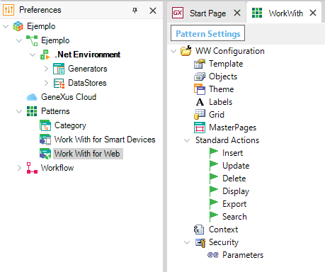

The Pattern Settings for Work With Pattern determines some general aspects applied to the objects that will be generated.  In this file you can configure properties such as the following: ThemeThis option indicates the classes to be used by default for the Theme. You can use any other class, provided that all the required classes have been defined. GridPage = Page.Rows - Indicates how many rows will be viewed in the grids. StandardActionsDefaultMode - Indicates whether to include an action by default in the grid. It applies to insert, update, delete, display and export* actions. * You can export to xls or xlsx format using the File extension property (available from GeneXus X Evolution 2 Upgrade 3). ContextThis property can be used for "Context management". For example, to maintain information about the application's current user (especially for authentication/authorization purposes), the current company for multi-company systems, etc. By changing the Context variable properties, you can change the variables and the procedures called. For example, you can use a context variable to define a filter: CompanyId = &Context.CurrentCompanyId. For Evolution 3 and prior versions: By default, the implementation includes a variable called &Context based on Context SDT. This Context variable used by the Work With pattern is defined with the Initial Value property, that is: in the objects that use the Context variable, the variable is defined with the Initial Value = LoadContext.udp(). This causes that the call to LoadContext procedure is not generated in each object. Please check the SAC 30796 for more information about the execution order using Initial Value property. From GeneXus 15 version: By default the "Context node" is empty. The developer can set the variables and procedures needed, in order to implement "context management". Once these values are defined and the patterns instance updated, the variables will be defined in the needed objects (e.g. transaction, workwith, etc) SecurityThis property implements object level security. By default, the implementation includes a procedure called IsAuthorized, which is invoked in the Start event of each Web Panel, to control the authorization for accessing the resource. If this procedure returns a false, it means that the user is not authorized to execute the application, and therefore the Web Panel NotAuthorized is called. In the sample implementation this procedure always returns a True, so you should customize it as needed. You can change the called objects by changing the Security properties. See also
|
| Backlinks | ||
| Pattern settings | Patterns - Work With Selection Node | Work With for Web |